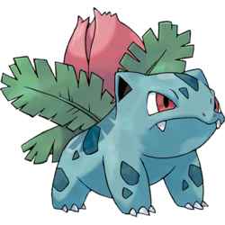

Ivysaur
Pokedex Entries
| Red/Blue/LeafGreen | When the bulb on its back grows large, it appears to lose the ability to stand on its hind legs. |
| Yellow | The bulb on its back grows by drawing energy. It gives off an aroma when it is ready to bloom. |
| Stadium | The bud on its back apparently draws energy from its body. The bud is said to open into a large flower when fully grown. |
| Gold/Stadium 2/HeartGold | Exposure to sunlight adds to its strength. Sunlight also makes the bud on its back grow larger. |
| Silver/SoulSilver | If the bud on its back starts to smell sweet, it is evidence that the large flower will soon bloom. |
| Crystal | The bulb on its back grows as it absorbs nutrients. The bulb gives off a pleasant aroma when it blooms. |
| Ruby/Sapphire/Omega Ruby/Alpha Sapphire | There is a bud on this Pokemon's back. To support its weight, Ivysaur's legs and trunk grow think and strong. If it starts spending more time lying in the sunlight, it's a sign that the bud will bloom into a large flower soon. |
| Emerald | To support its bulb, Ivysaur's legs grow sturdy. If it spends more time lying in the sunlight, the bud will soon bloom into a large flower. |
| FireRed/X | There is a plant bulb on its back. When it absorbs nutrients, the bulb is said to blossom into a large flower. |
| Diamond/Pearl/Platinum/Black/White/Black2/White2/Y | When the bud on its back stars swelling, a sweet aroma wafts to indicate the flower's coming bloom. |
Stats
| HP | 60 | At Lv. 50: 120-167 |
| Attack | 62 | At Lv. 50: 60-125 |
| Defense | 63 | At Lv. 50: 61-126 |
| Sp. Atk | 80 | At Lv. 50: 76-145 |
| Sp. Def | 80 | At Lv. 50: 76-145 |
| Speed | 60 | At Lv. 50: 58-123 |
| Total | 405 |
Type Effectiveness
Type: Grass, Poison
Weak to: Flying(2x), Fire(2x), Psychic(2x), Ice(2x)
Resistant to: Fighting(1/2x), Water(1/2x), Grass(1/2x), Electric(1/2x), Fairy(1/2x)
Abilities
Chlorophyll: Speed doubles in sun
Overgrow: Rauses the power of Grass-type moves by 50% when at 1/3 HP or less.
Competitive Set
No Sets Available